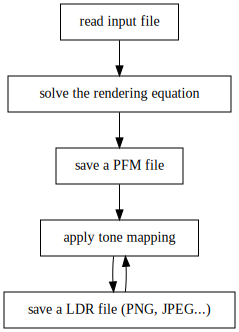

Lezione 5
Calcolo numerico per la generazione di immagini fotorealistiche
Maurizio Tomasi maurizio.tomasi@unimi.it
Tone mapping
Nelle precedenti lezioni abbiamo implementato un tipo
HdrImage, che gestisce matrici di colori di tipoColorIl tipo
Colorè una terna di valori floating-point (R, G, B) che codifica un colore.Il nostro tipo
HdrImageè in grado di salvare l’immagine in un file PFM, che è in formato HDR e quindi non direttamente visualizzabile.Il tone mapping è la tecnica che converte un’immagine HDR in un’immagine LDR, questa sì visualizzabile sui monitor.
Uso del tone mapping

Formati LDR
Ci sono molti formati LDR a disposizione.
Alcuni di questi sono perfetti per il nostro corso, altri richiedono alcuni accorgimenti per essere usati bene.
L’aspetto che più differenzia un formato dall’altro ha a che fare con la compressione.
Vedremo oggi alcuni algoritmi di compressione dati molto usati nel salvataggio delle immagini.
Nell’esercitazione di questa settimana implementeremo il salvataggio di file LDR impiegando una delle tante librerie disponibili per i linguaggi che state utilizzando.
Formati grafici e compressione
Formati LDR
- Non ci sarà un formato obbligatorio da implementare nel codice (PNG, JPEG, BMP, GIF, etc.): scegliete quello che vi intriga di più, o il più semplice da implementare.
- È però importante evidenziare le differenze tra i vari formati, perché ciascun formato ha vantaggi e svantaggi.
Differenze tra formati
- Versatilità
- Alcuni formati supportano solo colori codificati come terne (R, G, B) di 8×3=24 bit, altri ammettono più possibilità (es. 16×3=48 bit).
- Metadati
- Alcuni formati consentono di memorizzare metadati a piacere.
- Facilità di lettura/scrittura
- Alcuni sono semplici da scrivere (PNM), altri molto più complessi (JPEG, PSD!).
- Compressione
- Molti formati comprimono i dati per ridurre lo spazio su disco. Se la compressione preserva l’informazione è detta lossless, altrimenti lossy.
Compressione dati
La compressione dei dati è un argomento molto importante non solo nel campo della grafica, ma anche in fisica computazionale.
Le simulazioni e gli esperimenti del XXI secolo richiedono di registrare quantità di dati sempre più grandi. Esempio nell’ambito della CMB:
- Nel periodo 1989–1993, l’esperimento COBE/DMR ha acquisito <8 GB;
- Nel periodo 2001–2010, l’esperimento WMAP ha acquisito 200 GB;
- Nel periodo 2009–2013, l’esperimento Planck ha acquisito 30 TB.
Grandi moli di dati sono comuni anche in altri domini della fisica (particelle, climatologia, etc.): apprendere i principi della compressione dati è estremamente utile!
Compressione dati
Uno schermo di computer ha solitamente una risoluzione di 1920×1080 pixel.
Se vengono usati 8+8+8=24 bit per il colore sRGB di ogni pixel (3 byte per pixel), il numero totale di byte necessari è 3 \times 1920 \times 1080 = 6\,220\,800 che equivale a circa 6 MB.
Nelle immagini c’è solitamente molta informazione ridondante che può essere eliminata.
Palette di colori
Alcuni formati «storici» comprimono l’informazione limitando il numero di colori disponibili in un’immagine. Questo era giustificato dal limitato numero di colori supportato da certe vecchie schede grafiche.
Un esempio è il formato GIF: esso richiede che all’inizio del file vengano elencati i colori usati dall’immagine come terne sRGB in una lista di 256 elementi.
La matrice che rappresenta l’immagine contiene un solo byte per pixel: è il valore che «punta» al colore sRGB della palette. In questo modo si comprime di un fattore \lesssim 3.
Salvare un file usando una palette è un metodo lossy.
Esempio di palette

Usare una palette è un primo passo per comprimere, ma oggi si può fare molto meglio senza necessariamente restringersi a 256 colori!
Il problema della compressione
Usiamo come esempio la seguente sequenza:

Potete pensarla come una sequenza di caratteri ASCII, oppure dei valori numerici indicati da lettere (a, b, c, \ldots) che rappresentano componenti sRGB.
In gergo, a, b e c sono detti simboli.

Run-Length Encoding
Un tipo di compressione molto usato in passato è la Run-Length Encoding.
Invece di trasmettere la sequenza di valori, si trasmette un valore seguito dal numero di volte per cui deve essere ripetuto

È una compressione lossless: non si perde informazione.
Per questa sequenza, non c’è però guadagno: la versione compressa è lunga 22 byte (11 coppie valore/conteggio) anziché 15!

Ottimizzazione dei bit
Potremmo ottenere un risultato migliore se usassimo meno di 8 bit per il numero di ripetizioni.
Ovviamente, usando n bit non potremmo codificare più di 2^n ripetizioni (suggerimento: il valore
0b000può codificare 1 anziché 0…).Il codice si complicherebbe, perché nel salvare i dati in uno stream di bytes dovremo «decompattare» e «ricompattare» bit; però non è impossibile (vedi le slide opzionali alla fine).
Ottimizzazione dei bit
Nel nostro esempio di prima, usando n = 2 avremmo ancora 11 coppie (il numero massimo di ripetizioni è 3 < 2^2 = 4), ma i bit richiesti sarebbero (8 + 2) \times 11 = 110, corrispondenti a 14 byte:

Anche con questo accorgimento, la compressione resta lossless.

Maniac mansion PC (1989)

Ottimizzare i simboli
Potremmo ottimizzare anche i bit usati per i simboli.
Nel nostro esempio, i simboli che ricorrono sono appena 3: a, b e c. Il numero di bit necessario a codificare N = 3 simboli è \lceil\log_2 N\rceil = 2.
Potremmo associare una sequenza di bit univoca a ciascuno dei tre simboli:
Simbolo Sequenza a 00 b 01 c 10
Ottimizzare i simboli
La sequenza da cui siamo partiti

verrebbe quindi compressa nella sequenza di bit
a a c a c a a b a c b a a a c 00 00 10 00 10 00 00 01 00 10 01 00 00 00 10 0b00001000 0b10000001 0b00100100 0b000010xx (4 byte)Siccome ogni simbolo occupa 2 bit, il numero totale di bit è 2 \times 15 = 30, che richiede 4 byte per essere memorizzato: niente male!
Metadati
Abbiamo un po’ barato: nell’esempio precedente non sono sufficienti i 30 bit che abbiamo prodotto, se non sappiamo le corrispondenze con a, b e c.
Perché la sequenza si possa decomprimere, dobbiamo codificare anche la tabella delle corrispondenze. È sufficiente trasmettere il numero di simboli e la loro lista per ricostruire la tabella:
3 'a' 'b' 'c' 0b00001000 0b10000001 0b00100100 0b000010xxper un totale di 8 byte, comunque ancora vantaggioso.
Ovviamente la compressione resta lossless.
Codifica di Huffman
Esiste un algoritmo, la codifica di Huffman, che permette di ridurre ulteriormente il numero di bit richieste rispetto al caso precedente.
Si basa sull’idea che i simboli dovrebbero essere codificati da un numero variabile di bit, e che i simboli più frequenti dovrebbero usare meno bit.

Codifica di Huffman
Usando l’idea di Huffman, potremmo costruire questa tabella:
Simbolo Sequenza a 0 b 10 c 11 Questo ci consente di risparmiare un byte!
a a c a c a a b a c b a a a c 0 0 11 0 11 0 0 10 0 11 10 0 0 0 11 0b00110110 0b01001110 0b00011xxx (3 byte)
Entropia di Shannon
Il teorema di Shannon (1916–2001) ci permette di chiarire meglio il risultato.
Per enunciare il teorema dobbiamo prima introdurre l’entropia di Shannon, che è uno scalare S associato a una sequenza di N simboli \left\{x_i\right\}:
S(\left\{x_i\right\}) = -\sum_i p_i\,\log_2 p_i,
dove la somma è sul numero totale di simboli (3 nel nostro caso: a, b e c), e p_i è la probabilità dell’i-esimo simbolo.
Per convenzione, se p_i = 0 si pone p_i\,\log_2 p_i = 0.
Esempi di entropia (1/3)
Partiamo da una sequenza dove a e b compaiono un numero uguale di volte:
a, b, a, b, a, b, a, b, \ldots
Allora p_a = p_b = \frac12 e
S = -\left(\frac12\log_2\frac12\right) - \left(\frac12\log_2\frac12\right) = 1.
Esempi di entropia (2/3)
Se abbiamo una sequenza con tre simboli a, b e c con probabilità 1/2, 1/4, 1/4:
a, a, b, c, a, a, b, c, a, a, b, c, \ldots
allora
S = -\left(\frac12\log_2\frac12\right) - \left(\frac14\log_2\frac14\right) - \left(\frac14\log_2\frac14\right) = \frac32.
Esempi di entropia (3/3)
Per la nostra sequenza aacac… si ha che
S = -\left(\frac9{15}\,\log_2\frac9{15}\right) - \left(\frac2{15}\,\log_2\frac2{15}\right) - \left(\frac4{15}\,\log_4\frac2{15}\right) \approx 1.34.
Teorema di Shannon
Il teorema di Shannon fissa il limite inferiore al livello di compressione ottenibile per una sequenza di valori casuali con probabilità nota.
Esso dice che il numero minimo di bit necessari alla codifica di una sequenza di N simboli x_n è uguale a
S(\left\{x_i\right\}) \times N.
In altre parole, un compressore deve sempre usare almeno S bit per simbolo.
Nella nostra sequenza
aacac…, il numero minimo teorico di bit necessario è 1.34 \times 15 \approx 20 (un po’ meno di 3 byte): Huffman quindi in questo caso non riesce a raggiungere il limite teorico.
Codifica aritmetica
La codifica aritmetica è un approccio alternativo a quello di Huffman.
Si distingue per tendere asintoticamente al limite di Shannon, in qualsiasi caso! («Asintoticamente» nel senso che lo fa se la sequenza di simboli ha lunghezza infinita).
Invece di codificare ogni simbolo separatamente, li codifica tutti insieme in un unico numero binario (sempre compreso tra 0 e 1): in questo modo è come se impiegasse per ogni simbolo un numero possibilmente frazionario di bit, che è pari a S se N \rightarrow \infty.
Algoritmo
Si divide l’intervallo [0, 1] in tanti intervalli quanti sono i simboli.
Ogni intervallo deve essere lungo tanto quanto la probabilità del simbolo:

Considerando la sequenza \{x_n\} dei simboli da codificare, ad ogni simbolo da codificare si fa corrispondere l’intervallo corrispondente, che viene a sua volta suddiviso in sotto-intervalli come sopra.
All’intera sequenza si associa quindi un intervallo [\alpha, \beta], con 0 < \alpha < \beta < 1.


Uso della codifica aritmetica
- Una volta codificata la sequenza in un intervallo [\alpha, \beta], questo intervallo è identificato univocamente da qualsiasi numero \xi \in [\alpha, \beta].
- Quindi una sequenza di lunghezza nota è associabile a un numero reale \xi.
- Si dimostra che il numero di bit necessario per codificare questo numero \xi, se opportunamente scelto, tende a S \times N quando N \rightarrow \infty.
- Trasmettere il numero \xi equivale a trasmettere quindi l’intero messaggio, ma la codifica è ottimale.
- Oggi alla codifica aritmetica si preferiscono metodi basati sugli asymmetric numeral systems (Duda, 2014), che hanno le stesse capacità di compressione ma garantiscono esecuzioni più veloci (v. Zstandard).
JPEG
È un algoritmo pensato per la compressione delle immagini.
Codifica i colori con 24 bit, ma internamente lavora nello spazio di colore Y CB CR anziché sRGB.
Decompone l’immagine in blocchi di 8×8 pixel, che «linearizza» in tre vettori monodimensionali (Y, CB, CR) di 64 elementi a cui applica la Discrete Cosine Transform (DCT), un tipo di trasformata di Fourier.
Ai coefficienti DCT è applicata una trasformazione del tipo s \rightarrow \bigl[[s / q] \times q\bigr] che fa perdere informazione (algoritmo lossy); il livello di quantizzazione è detto quality, ed è compreso tra 0 e 100.
I coefficienti quantizzati sono compressi con Huffman o l’aritmetic coding.
Quantizzazione

Van Gogh, Campo di grano con volo di corvi (1890)
Dictionary compressors
- Il teorema di Shannon fornisce un limite inferiore alla lunghezza di una serie compressa.
- Esso però vale nel caso di una successione casuale di simboli: l’ordine in cui i simboli compaiono non conta! I compressori per cui il teorema di Shannon sono detti compressori entropici, o statistici.
- I cosiddetti dictionary compressors cercano sequenze ripetute nella successione di simboli da comprimere.
- I dictionary compressors sono da sempre molto usati nei formati grafici.
Lempel-Ziv (1977)
Nel 1977, Abraham Lempel and Jacob Ziv proposero un algoritmo di compressione che è stato poi impiegato in molti formati grafici, da allora chiamato LZ77.
Esso sostituisce sequenze di dati con riferimenti a parti precedenti.
La sequenza di simboli è codificata in una sequenza di terne (δ, L, s), dove δ è un indice che dice di quanti simboli retrocedere, L è il numero di simboli da considerare, e s è il nuovo simbolo da aggiungere in coda.
L’algoritmo fissa un limite al numero di simboli da cercare a ritroso (che vanno tenuti in memoria): questo segmento è detto window.

Lempel-Ziv (1978)
LZ77 ha lo svantaggio di richiedere di fissare una lunghezza della window: dimensioni diverse possono portare a performance differenti.
L’anno successivo (1978), Lempel & Ziv pubblicarono un nuovo articolo in cui descrivevano un nuovo algoritmo che non aveva questo grado di libertà.
Il nuovo algoritmo, chiamato LZ78, si basa su un «dizionario» di sequenze già codificate, che possono essere richiamate quando si trovano loro ripetizioni.
La sequenza compressa è formata da una lista di coppie (k, s), dove k fa riferimento a un elemento del dizionario oppure è 0 se non esistono corrispondenze, e s è il nuovo simbolo da mettere in coda.

I formati grafici più diffusi
Il formato BMP
È un formato ideato da Microsoft per Windows e OS/2.
Il formato originale non prevedeva la compressione dei dati, ma con gli anni Microsoft ha aggiunto il supporto per RLE e Huffman coding.
Non supportando algoritmi di compressione avanzati, i suoi file sono generalmente molto grandi. ☹️
Permette di salvare file con palette, se si desidera comprimere ulteriormente il file. 😀
Non è troppo difficile da scrivere, soprattutto se evitate di comprimere i dati. 😀
Il formato GIF
Usa la compressione LZW, che è una variante di LZ78: storicamente, è stato il primo formato di una certa diffusione a mostrare buoni livelli di compressione (1987).
Supporta solo immagini con palette, quindi è limitato a 256 colori. ☹️
A causa di problemi di brevetti legati alla compressione LZW (ora scaduti), nel 1995 è stato rilasciato il formato PNG, che usa un algoritmo di compressione (DEFLATE) basato su LZ77, all’epoca non gravato da brevetti.
Oggi è usato esclusivamente per la sua capacità di salvare semplici animazioni.
Il formato PNG
Supporta immagini con palette (come il GIF), ma anche immagini a 24 bit e addirittura a 48 bit. 😀
Implementa una compressione più efficiente di GIF, ispirata all’algoritmo LZ77. 😀
Oggi è lo standard per le immagini su web, insieme al JPEG (v. in seguito).
Il formato JFIF
L’acronimo JFIF significa JPEG File Interchange Format.
È il formato ogirinale usato per salvare dati compressi usando l’algoritmo JPEG, anche se oggi altri formati supportano la compressione JPEG.
I file in formato JFIF hanno di solito estensione
.jpgo.jpeg, anche se si possono trovare le estensioni.jfif,.jfio.jif.Il formato prevede anche un metodo di compressione lossless, che è però poco usato.
Il formato TIFF
Creato dalla Aldus Corporation per gestire le immagini salvate da scanner (1986), in seguito acquisito dalla Adobe.
Il più versatile dei formati visti qui:
- Immagini multiple in uno stesso file 😀;
- Diversi schemi di compressione, sia lossless che lossy (RLE, LZW, JPEG, etc.) 😀;
- Supporta sia immagini a 24/48 bit che immagini con palette 😀;
- I colori possono essere memorizzati in vari spazi di colore, non solo sRGB 😀.
Molto diffuso nelle applicazioni (GIMP, Photoshop, etc.), non usato sul web.
Il formato WebP
Creato da Google nel 2010.
Usa più algoritmi di compressione (LZW, JPEG, Huffman, …); l’effetto complessivo è un algoritmo lossy.
È il formato più efficiente tra quelli visti oggi: i suoi livelli di compressione sono eccellenti 😀.
Supportato su tutti i browser tranne sotto il Mac OS X (il supporto è stato aggiunto solo nel 2020 con Big Sur).
Confronto dei formati

Dimensioni dei file contenenti l’immagine di «Campo di grano con volo di corvi».
Approfondimento: manipolare i bit
Dai byte ai bit
Gli algoritmi di compressione solitamente si basano sulla rappresentazione in bit dei numeri interi (in tipi come quelli del C++:
int,uint8_t,uint32_t, etc.)Abbiamo già visto di sfuggita l’importanza di esplorare i bit all’interno dei byte quando abbiamo descritto il formato UTF-8.
Vi lascio come riferimento una serie di slide che mostrano come manipolare i singoli bit all’interno di un byte; non ci serviranno però durante le esercitazioni.
Operazioni sui bit in C++ (1/2)
Le due operazioni
<<e>>sono dette bit shift operators, e traslano i bit verso destra o sinistra (sono infatti indicate con (shleshrin Pascal), eliminando quelli alle estremità:0b00101110 >> 1 = 0b00010111 0b00101110 << 1 = 0b01011100 0b00101110 >> 2 = 0b00001011 0b00101110 << 2 = 0b10111000 0b00101110 >> 3 = 0b00000101 0b00101110 << 3 = 0b01110000 0b00101110 >> 4 = 0b00000010 0b00101110 << 4 = 0b11100000L’operazione
x << 1equivale a un prodotto per due, proprio come l’aggiunta di uno zero in fondo a un numero decimale equivale al prodotto per dieci (13 → 130).In generale,
x << nè matematicamente uguale a 2^n \times x, ex >> nè uguale a \lfloor 2^{-n} \times x\rfloor.
Operazioni sui bit in C++ (2/2)
Il C++ implementa gli operatori logici
&&(and),||(or) e^^(xor):true && true == true true || true == true true ^^ true == false true && false == false true || false == true true ^^ false == true false && true == false false || true == true false ^^ true == true false && false == false false || false == false false ^^ false == falseLe operazioni
&,|e^corrispondono all’and, or e xor logici&&,||,^^, ma sono fatte sui bit:0b00011001 & 0b00011001 | 0b00011001 ^ 0b10010101 = 0b10010101 = 0b10010101 = ---------- ---------- ---------- 0b00010001 0b10011101 0b10001100
write_float
Due settimane fa avevo fornito questo codice C++ per estrarre i quattro byte di cui è composta la variabile uint32_t double_word:
// To interpret this code, you must remember that:
// - uint32_t double_word is made by 8×4 = 32 bit
// - 0xFF is the uint32_t number
//
// 0b0000_0000_0000_0000_0000_0000_1111_1111
// Extract the four bytes in "double_word" using bit-level operators
uint8_t bytes[] = {
static_cast<uint8_t>(double_word & 0xFF), // Least significant byte
static_cast<uint8_t>((double_word >> 8) & 0xFF),
static_cast<uint8_t>((double_word >> 16) & 0xFF),
static_cast<uint8_t>((double_word >> 24) & 0xFF), // Most significant byte
};Applicazione: BitWriter
class BitWriter:
"Write a sequence of bits into several 8-bit bytes"
def __init__(self):
self.seq_of_bytes = []
self.bits_written = 0
self.cur_byte = 0
def push(self, value):
self.cur_byte = (self.cur_byte << 1) + value
self.bits_written += 1
if self.bits_written == 8:
self.seq_of_bytes.append(self.cur_byte)
self.bits_written = 0
self.cur_byte = 0Esempio di BitWriter
Questo codice usa
BitWriterper scrivere una sequenza di 16 cifre binarie (0/1) inoutput_stream, e poi stampa i due byte che le contengono.Output:
Sequence of bytes produced by BitWriter: Byte #0: 201 (0b11001001, 0xc9) Byte #1: 77 (0b01001101, 0x4d)
BitReader
class BitReader:
"Decompose a sequence of bytes into binary digits"
def __init__(self, seq_of_bytes):
self.seq_of_bytes = seq_of_bytes
self.cur_bit = 0
def pop(self):
result = (self.seq_of_bytes[0] & 0b10000000) >> 7
self.seq_of_bytes[0] = self.seq_of_bytes[0] << 1
self.cur_bit += 1
if self.cur_bit == 8:
self.cur_bit = 0
self.seq_of_bytes = self.seq_of_bytes[1:]
return resultEsempio BitReader
Possiamo usare
BitReaderpassandogli come input i due byte prodotti daBitWriternell’esempio precedente:Output:
Sequence of bits as decoded by BitReader: 1 1 0 0 1 0 0 1 0 1 0 0 1 1 0 1
Codifica aritmetica (1/5)
Vediamo ora come implementare l’algoritmo della codifica aritmetica per associare un intervallo [\alpha, \beta] a una sequenza di byte.
L’algoritmo usa il concetto di «intervallo», quindi definiamo un tipo
Intervalche codifica una coppia di numeri reali:
Codifica aritmetica (2/5)
La codifica aritmetica ha bisogno di conoscere la probabilità con cui ogni byte compare nella sequenza.
Usiamo i
setdi Python per costruire una lista di tutti i simboli che compaiono nella sequenza, e poi usiamocountper contare ciascuna corrispondenza:
Codifica aritmetica (3/5)
Una volta note le probabilità di ogni elemento, bisogna suddividere l’intervallo [0, 1] secondo le probabilità di ciascun simbolo.
La funzione
intervalsinvocaprobabilitiese costruisce un dizionario che associa ad ogni simbolo il proprio intervalloInterval:
Codifica aritmetica (4/5)
def arithmetic_compression(seq):
spans = intervals(seq)
cur_span = Interval()
for s in seq:
print(f"Current interval: {cur_span}")
subspan = spans[s]
curlen = cur_span.end - cur_span.start
new_span = Interval(
start=cur_span.start + curlen * subspan.start,
end=cur_span.start + curlen * subspan.end,
)
cur_span = new_span
return cur_spanCodifica aritmetica (5/5)
Verifichiamo il funzionamento del codice sulla nostra sequenza:
L’output è il seguente:
Current interval: [0.0000000, 1.0000000] Current interval: [0.0000000, 0.6000000] Current interval: [0.0000000, 0.3600000] … Current interval: [0.3099529, 0.3099586] Current interval: [0.3099529, 0.3099563] Result for 'aacacaabacbaaac': [0.3099554, 0.3099563]